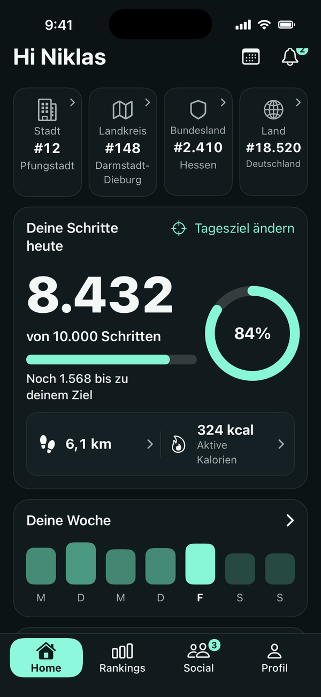
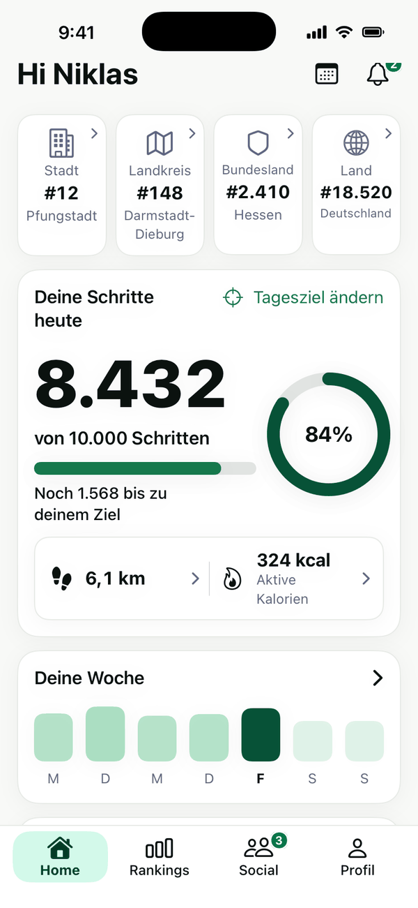
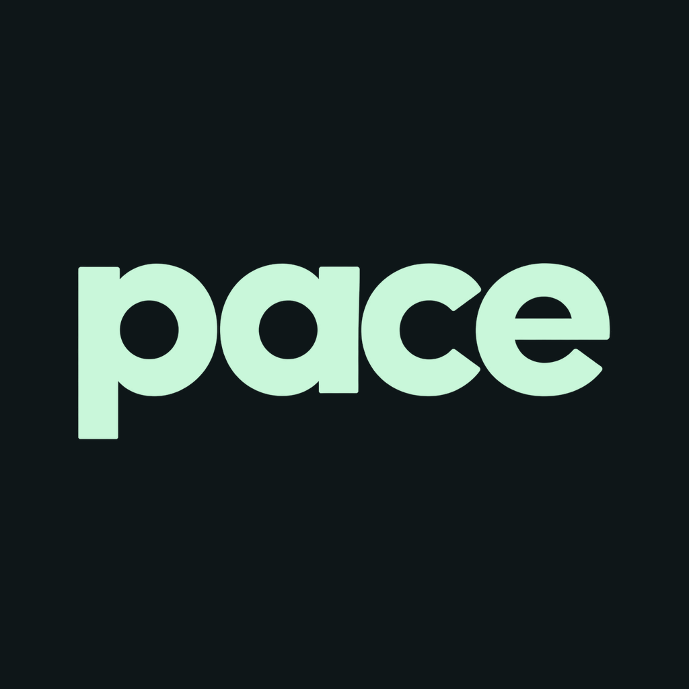

Dein Alltag in Bewegung.
Automatische Schritte aus Apple Health — ohne manuelle Schritteingabe in Pace. Schritte, Kalorien und Aktivität immer im Blick.
Apple Health AutomatischTagesziele Dein Tempo
Deine Schritte. Deine Ziele. Deine Leute.
Mach Bewegung zu einem Teil deines Alltags.


Automatisch erfasste Bewegung, persönliche Ziele und Menschen, die mitziehen.
Automatische Schritte aus Apple Health — ohne manuelle Schritteingabe in Pace. Schritte, Kalorien und Aktivität immer im Blick.
Rankings für Ort, Landkreis, Bundesland und Deutschland. Dazu private Ranglisten für Freunde, Schule, Arbeit und eigene Gruppen.
Profile, Freunde, Einzel- und Gruppenchats. An Gruppen-Events nimmst du kostenlos teil.
Eine Pro-Stufe, alle Pro-Funktionen. Die folgenden Erweiterungen sind geplant und noch nicht veröffentlicht.
Ein ruhiges Mint. Ein warmes Apricot. Oder deine ganz eigene Kombination. Mit Pace Pro gibst du deinem Homescreen, Profil und deinen Chats deinen Stil.
Was kostet Pace Pro? →Eigene Haupt- und Sekundärfarbe mit direkter Designvorschau. Dazu eigene Chatfarben und Hintergründe für Einzel- und Gruppenchats.
20–30 auswählbare Appicons, auch saisonale Designs. Pro-Badge, Profilbildrahmen und ein eigener öffentlich sichtbarer Profilbanner.
Individuelle Namensfarben in Chats und Rankings. Dein persönlicher Stil begleitet dich durch die App.
Rankings anderer Orte und Regionen entdecken und vergleichen — ohne gekaufte Vorteile in Rankings.
Eigene Gruppen-Events starten: etwa eine 30-Minuten-Schrittchallenge oder ein Rennen bis 1.000 Schritte. Die Teilnahme bleibt kostenlos.
Zusätzliche Analysen zu Regelmäßigkeit, Aktivitätsmustern und persönlicher Entwicklung — mit passenden neuen Pro-Widgets.
Für alle, die Pace Pro erst einmal kennenlernen möchten.
Für ein ganzes Jahr voller kleiner Fortschritte.
Zum Einstieg geplant: 29,99 €.
Mit PACE1 erhalten die ersten Nutzer ein Jahr Pro kostenlos. Aktionsbedingungen folgen; die Aktion ist noch nicht aktiv.
PACE1Bewegung zählt. Dein Abo nicht.
Alle bestehenden kostenlosen Funktionen und Widgets bleiben kostenlos. Keine gekauften Vorteile in Rankings.
Timer, Strecke, Kilometerbenachrichtigungen, Pause und Live Activity.
Noch mehr Menschen finden, die sich gemeinsam bewegen möchten.

Pace wird aktuell entwickelt. Einen Veröffentlichungstermin gibt es noch nicht.
Pace liest Bewegungsdaten aus Apple Health. Manuell eingetragene Schritte erscheinen in deinen Gesundheitsdaten, zählen aber nicht für Wettbewerbsrankings. Für regionale Rankings ist deine ausdrückliche Zustimmung vorgesehen.
Der Screenshot stammt aus der Pace-App und zeigt Testdaten. Diese Website liest keine Gesundheitsdaten aus. Die native App setzt iOS 17 oder neuer voraus.